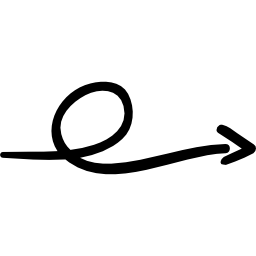

Mes Formations :
Septembre 2023 :
Rentrée en 1er année de BUT Réseaux et Télécommunications à l’IUT d’Aubière
Juillet 2023 :
Obtention du baccalauréat Technologique STI2D au lycée Jules Renard à Nevers
Septembre 2021 :
Entrée en première STI2D au Lycée Jules Renard à Nevers